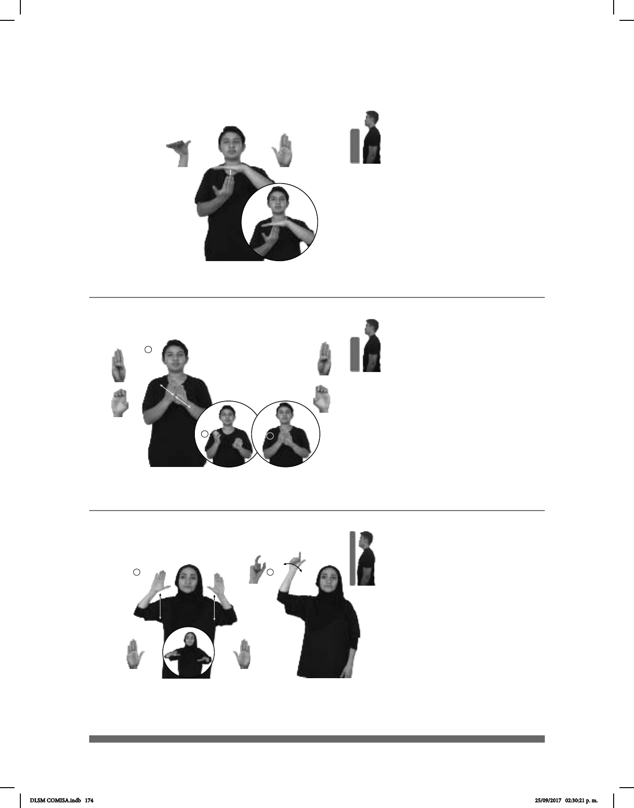

174
(B-P 190) Mesa
MESA NUEVA pro-YO QUERER
Quiero una mesa nueva.
Seña: SB
MD B-P.11, MB
B-P.2
MD palma hacia
adentro. MB palma hacia abajo.
A la altura del pecho.
MD debajo de MB.
La MD golpea la MB
en línea recta repetidamente.
sust. f. Mueble
compuesto por una plataforma
sostenida por una o varias patas,
encima de la cual generalmente se
pone o se hace algo.
Seña: SC: SS
Seña que pasa de
B-P.1 a E.1
Palmas hacia el
centro.
A la altura del pecho.
MD detrás de MB.
Las manos parten de
un mismo punto y luego se abren
hacia el frente y hacia atrás.
sust. m. Autobús
articulado de tránsito rápido
perteneciente al Sistema de
Transporte Público de la Ciudad de
México.
Seña: SC: I. SS; II. SM
I. B-P.2; II. Q.1
I. Las palmas inician hacia
afuera y terminan hacia abajo; II. Palma
hacia afuera.
I. De la cabeza al pecho; II. A la
altura de la cabeza.
I. Recto; II. La mano se agita.
oración en común de los musulmanes; la
sala de oración es generalmente rectangular
y tapizada con alfombras; suele tener un
patio con una fuente al centro para las
abluciones, y una torre o minarete, desde
dedicadas a la oración.
(B-P 191)
(B-P 192)
METROBÚS pro-ELLA LLEGAR TRABAJO
Ella llega al trabajo en el metrobús.
MEZQUITA
derecha
MUSULMÁN pro-ÉL ORAR
El musulmán ora en la mezquita.
DLSM COMISA.indb 174 25/09/2017 02:30:21 p. m.